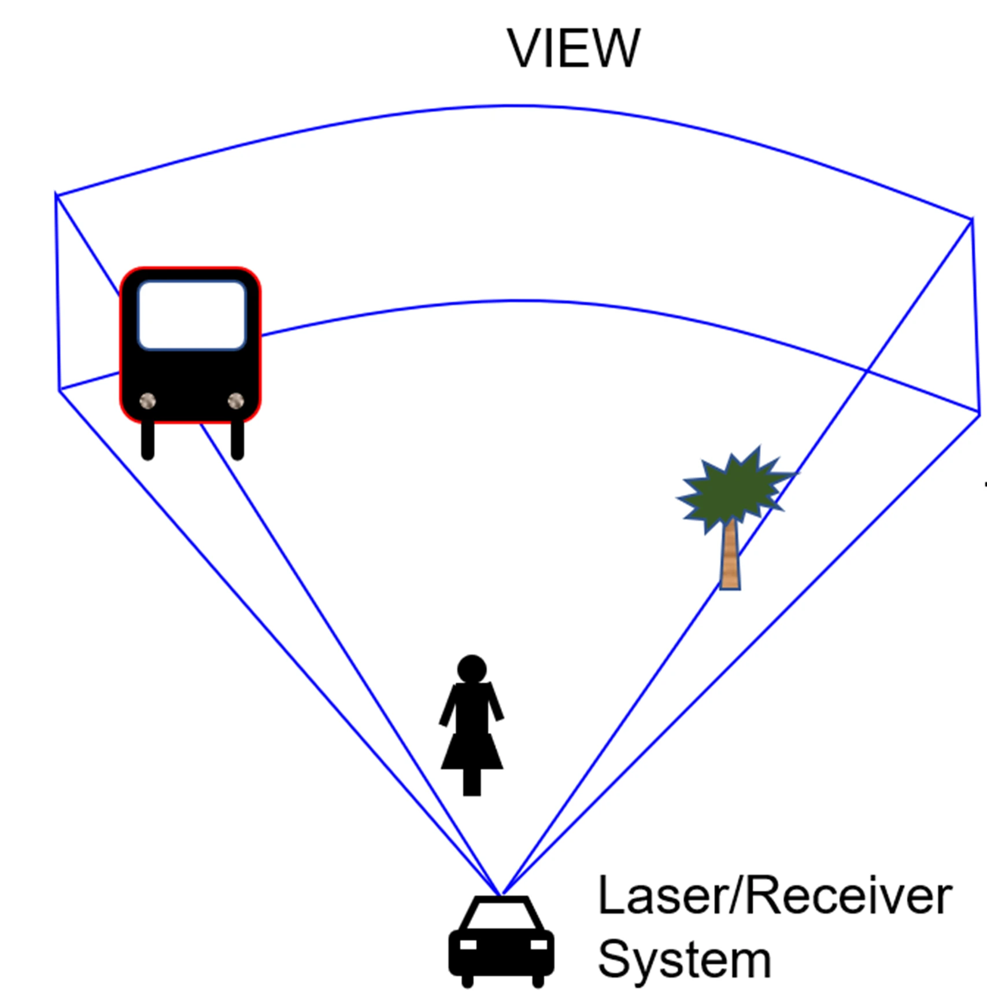
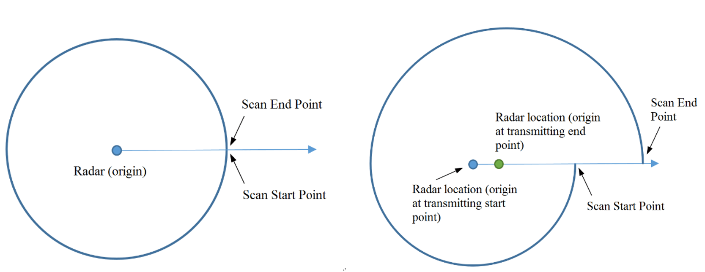

Simple-LIO-SAM——（三）总体流程认识
- ⭐ Zeal's Blog
- 🛠 知乎专栏
- 🌀 项目仓库
总体流程
话不多说，直接上干货。下图是整理出来的LIOSAM整体运行流程
整体认识
所谓的紧耦合，我是这么理解的：IMU本身就可以积分出来一个位姿，连续帧的点云匹配也可以计算出一个位姿，如果两者分别进行，然后再做一个加权融合，那么就属于松耦合。而从上面的框架图也可以看出，LIOSAM的融合框架整体呈现一个圈，每个环节都为下一个环节提供信息，最后一个环节又为第一个环节提供信息。同时，耦合之处还在于以下几点： 1. 高频的IMU信息对激光雷达点云做了畸变矫正，做了畸变矫正后的点云被用来做匹配计算激光里程计 2. IMU的积分结果被用来当作该帧点云的初值，为点云匹配提供了较好的初始估计 3. 雷达里程计的结果被用来计算IMU的偏差，同时也被用来持续纠正IMU里程计
虽然LIOSAM框架中还可以融合GPS信息，但是主要还是对雷达点云和IMU信息，因此，可以认为输入是点云和IMU数据，输出是小车当前时刻的位姿，已经对历史时刻位姿的平滑。
框架的入口是点云去畸变模块，主要的功能就是对激光雷达运动畸变做矫正，然后输出去完畸变的点云。
去完畸变的点云经过特征提取模块，提取出角特征点和平面特征点，被图优化模块中的点云匹配部分用来做点云匹配。
图优化模块利用去完畸变后的点云与历史帧构建的局部地图做匹配，得出较准确的里程计结果。同时利用图优化，加入回环检测因子，使得整体估计更为准确顺滑
IMU预积分模块从IMU和图优化模块接收数据，对IMU的原始数据做积分，得出每一帧点云的初始位姿，提供给图优化模块作为优化初始值。同时又从图优化模块拿出经过点云、图优化校正后的里程计结果校正本身的结果
坐标系发布主要是为了
RIVZ显示中用的，主要就是将各种里程计结果转换成TF坐标关系发布出去。在原始LIOSAM中是与imuPreintegration放置在同一个文件
运动畸变矫正
- 为什么激光雷达有运动畸变？ 激光雷达通过发射高能量激光线束，计算激光线束往返时间，得到该激光线打到的物体的距离。以机械式激光雷达为例，雷达在统一时刻可以发送多条激光线（32、64、128），这多条激光线在垂直方向上可以扫到三维空间中垂直的一条线，激光雷达通过环绕一周的方式可以对360的空间做三维成像 
由于激光雷达是通过激光线束环绕一周的方式成像一帧的点云，那么这一帧点云的点就是在不同的时间探测的。如果激光线束在环绕一周的过程中，激光雷达是在运动的，那么这一帧点云就由于激光雷达的运动而变得不准确，因此需要对其做校正。  （上面这幅图片引用自livox官网[Liovox_distortion_removal])
激光雷达输出的每一帧点云\(P\)，里面的每一个点\(p_i\)，都有一个属性\(t_i\)，记录了该点距离该帧点云起始时刻的时间间隔，也就是下面代码段里的time字段。 1
2
3
4
5
6
7
8
9
10
11
12
13// imageProjection.cpp 49-60
struct VelodynePointXYZIRT
{
PCL_ADD_POINT4D
PCL_ADD_INTENSITY;
uint16_t ring;
float time;
EIGEN_MAKE_ALIGNED_OPERATOR_NEW
} EIGEN_ALIGN16;
POINT_CLOUD_REGISTER_POINT_STRUCT (VelodynePointXYZIRT,
(float, x, x) (float, y, y) (float, z, z) (float, intensity, intensity)
(uint16_t, ring, ring) (float, time, time)
)
由于IMU是非常高频的，因此我们可以得出该帧点云成像时间段内的激光雷达位移和旋转的变换，然后通过每一个点的时间\(t_i\)，可以根据时间进行插值得出每一个点相对于起始点的转换关系\(T_i\)。（注：LIOSAM里面是直接通过时间戳查找，而不是进行插值）。从而，我们就可以将每个点都转换到起始点的坐标系 \[ p_i^0 = T_ip_i \]
点云特征提取
激光里程计中一般会涉及到点云匹配，如果用原始点云进行匹配由于点数过多的关系，会导致耗时太长，因此LIOSAM中用类似LeGO-LOAM的方法进行边缘点,平面点两类特征点的提取，后面点云匹配部分使用这两种特征点进行LM优化求解出匹配关系。
这部分的代码相对简单，后面关于这个模块的详细内容会介绍，这里唯一要清楚的是，这里的点云特征点提取用的是每个点的曲率，选择曲率大的点作为边缘点，选择曲率小的点作为平面点。但是曲率的计算是用每个点周围的点到其平均距离作为近似。
IMU预积分模块
这一个模块虽然从原理和实现上来说稍微有一点点复杂，但是从功能上简单来说只有一个功能，就是实时对IMU原始数据做处理（积分），得到每一个时刻的IMU里程计（也是6自由度位姿），然后该位姿被用来作为该帧点云的初始估计位姿，这个初始估计位姿会被用来作为点云匹配的初始估计。
点云匹配及图优化
这是整个框架最复杂的一个模块（也许是没有很好解耦？）。这个模块主要包含了以下几个功能： 1. 点云匹配 2. 回环检测 3. 因子图构建及优化 4. 根据关键帧信息构建全局地图
具体内容会在后面的章节展开，这里应该要有几个感性认识： 1. 一般点云精细匹配（比如ICP算法）需要有一个良好的初始值，这里的初始值可以理解成采用IMU预积分模块的输出。 2. 点云匹配部分用的是沿用自LOAM->LeGO-LOAM的点云匹配算法，不是使用ICP。LeGO-LOAM也是TixiaoShan在LIOSAM的上一篇相关论文 3. 回环检测根据里程计的x,y,z检索紧邻帧，然后通过ICP算法计算当前帧与近邻帧的转换关系 4. 经过点云匹配后的位姿会经过图优化得出更平滑的位姿 5. 地图和因子图的因子实际上是以关键帧的形态存在后端优化部分，关键帧的选取会比较稀疏，比如距离小与1米不会采用为关键帧。不采用为关键帧的点云会执行完点云匹配后就直接输出位姿。 6. 在有新的回环因子加入因子图后，会进行多次因子图优化器的更新步骤，然后将所有历史关键帧的位姿都更新一遍 7. 这个部分还支持GPS里程计的监听，并将GPS里程计也加入因子图进行优化
坐标系规定
坐标系规定
原有的urdf文件加入了太多额外没必要的关节，导致rviz中tf-tree关系太过复杂。为了简化坐标系关系，但同时又维持坐标系关系标准化并且与ROS的规定相同（ROS中关于姿态估计的坐标系关系主要参考：robot_localization_coordinate_system，这里对项目中的坐标系关系做了一些简化修改。 根据robot_localization包的规定，所有姿态都要转到世界坐标系，通常是map或者odom坐标系。所有的twist数据，都要转到base_link坐标系下处理。
Simple-LIO-SAM坐标系说明
- 根据REP资料，一般有4个坐标系
earth,map,odom,base_link。由于在SLAM中一般没有引入地球坐标系。所以在这里只有后三个坐标系。 同时，如果是以起始点作为地图原点，map,odom两个坐标系是重合的关系。 - 另外，为了可以在Rivz显示原始点云信息，则也加入一个雷达坐标系。
- 为了让坐标系定义自洽，虽然在算法中没有直接用到，但是IMU加速度速度和角速度应该定义在IMU坐标系，因此引入IMU坐标系
- 为了让定义更为标准，这里保留
map坐标系，虽然在SLAM中map,odom大部分情况是重叠的 - 因此，整个spl_lio_sam框架可以简化成5个坐标系：
map,odom,base_link,lidar_link,imu_link坐标系。其中，map是地图原点，在建图时是起始点，在重定位模式时，是地图原点。odom是里程计坐标系；base_link是车辆自身坐标系。lidar_link坐标系是雷达坐标系， 在lio_sam中是与base_link坐标系对齐的，但是lidar_link字段会根据雷达型号不同，被修改。imu_link坐标系是IMU坐标系，配置文件中 有指明IMU坐标系到Lidar坐标系的转换关系。
坐标系关系的其他说明
- ROS的Message Header只有一个frame_id字段，表明这个数据是在哪个坐标系下的。
- nav_msgs/Odometry中还有一个child_frame_id字段，nav_msgs/Odometry中的twist数据应该是在child_frame_id坐标系下的数据 > The twist in this message should be specified in the coordinate frame given by the child_frame_id